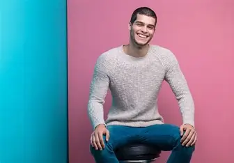
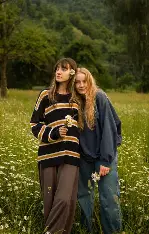

"Cada visita es una experiencia distinta: el café está siempre fresco, el lugar es acogedor y el servicio me hace sentir como en casa."
Laura Gómez
Diseñadora gráfica
Testimonios
Una comunidad que disfruta del café, el ambiente y el servicio cercano en cada visita.
"Cada visita es una experiencia distinta: el café está siempre fresco, el lugar es acogedor y el servicio me hace sentir como en casa."
Laura Gómez
Diseñadora gráfica

"La repostería es deliciosa y siempre encuentro opciones nuevas. El ambiente tranquilo me ayuda a concentrarme en mis reuniones."
Carlos Ríos
Gestor de eventos

"El espacio coworking es ideal para mis mañanas. Buena conexión y un café que siempre me da energía para seguir."
Paula Santos
Freelance
"Las catas son un descubrimiento constante. Aprendí a distinguir aromas y sabores que no imaginaba en un café de la ciudad."
Javier Morales
Sommelier aficionado
"Venimos cada semana con mi grupo de amigos. La atención es cercana y el menú siempre tiene algo especial que recomendar."
María López
Consultora